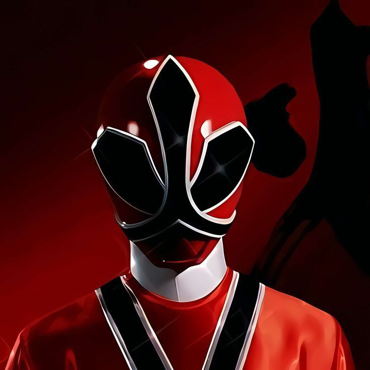

Power rangers bleu
Il est le cerveau et le scientifique de l'équipe, souvent considéré comme le second. Très intelligent mais timide au départ, il compense sa timidité par sa loyauté indéfectible envers ses amis

Le Ranger rouge est presque toujours le leader et le personnage central de l'équipe dans l'univers de Power Rangers
Il est le cerveau et le scientifique de l'équipe, souvent considéré comme le second. Très intelligent mais timide au départ, il compense sa timidité par sa loyauté indéfectible envers ses amis
.jpg)
Calme, courageuse, studieuse et au tempérament de médiatrice. Elle joue souvent le rôle de « grande sœur » au sein du groupe et se montre très protectrice envers ses amis

D'abord présenté comme un nouvel élève au lycée d'Angel Grove, il est manipulé et placé sous l'emprise maléfique de l'impératrice Rita Repulsa, qui fait de lui son soldat attitré pour détruire les Rangers.
.jpg)
Le Ranger Rose dans l'univers de Power Rangers est un rôle emblématique qui est toujours interprété par une femme. Loin de se limiter à des stéréotypes de douceur, il incarne souvent un mélange de grâce, de féminité, de courage et de force de caractère
.jpg)
Un soutien stratégique : Occupé par ses fonctions royales à Xandar, il n'intervient que lors des batailles décisives contre les ennemis les plus puissants.
.jpg)
Dans la franchise Power Rangers, le Ranger Violet occupe un rôle de mentor, de stratège ou de soutien technique essentiel au sein du groupe. Contrairement aux autres membres qui sont souvent de jeunes recrues impulsives, il apporte de l'expérience et une expertise unique à l'équipe

Rôle et personnalité : Souvent perçu comme l'un des membres les plus charismatiques, cools et stylés de l'équipe. Sa couleur noire inspire le sérieux, le mystère et la force tranquille, contrastant avec l'énergie flamboyante du Ranger Rouge.

Joyeux, hyperactif, bavard et optimiste, il contraste avec l'attitude plus rigide et traditionnelle des autres samurais. C'est aussi un pêcheur passionné et un génie de l'électronique.